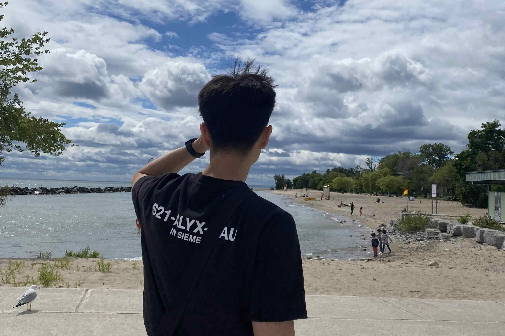

About Me
Hello again — I’m Johann, a digital designer based in Vancouver with a background in UX/UI, digital marketing, and front-end development. I’m currently freelancing on eCommerce projects, while also looking for opportunities in UX/UI design, product design, and digital marketing where I can apply my hybrid skillset to create engaging, user-centered experiences.

I’ve had the opportunity to work across a range of industries — from eCommerce and SaaS to healthcare and brand design. As a freelancer, I’ve designed and customized Shopify storefronts, created branded marketing assets, and optimized content to improve engagement and conversions. At Convergence/Pixel Ramen, I contributed to SaaS and healthcare projects, building design systems, testing user flows, and supporting front-end development alongside cross-functional teams.
Before transitioning fully into design, I spent several years in marketing, sales, and customer service. That background gave me an instinct for understanding people’s needs, communicating clearly, and balancing business goals with user-centered solutions — a perspective I bring into every project I take on.
Skillset
(01)
UX Research & Strategy
(02)
UI & Interaction Design
(03)
Front-End Development
(04)
Brand & Visual Design
(05)
Digital Marketing & Content
My previous experience in marketing and sales has taught me how to understand audiences, craft compelling messages and creating effective strategies - all of which play a vital role in user-centered designs.
Growing up, I was always drawn to different creative outlets whether it be architecture, photography, fashion, etc. My diverse appreciation for all these mediums serves as my sources of inspiration in my design workflow.
When I'm not behind the screen, you'll probably find me at a driving range working on my swing or getting a workout in at the gym! As I continue to grow as a designer, I hope to explore different areas like print and typography design.